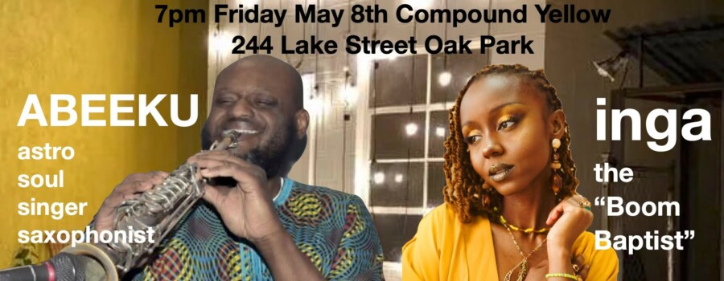

Side Yard Sounds presents: ABEEKU + inga
Tickets $15 https://events.ticketleap.com/…/side-yard-sounds…
BYOB.
ABEEKU is the latest facet of the vast artistic expression of composer and performer David Boykin. Its a combination of electro soul, golden era hip hop production, and spiritual jazz into a sensuous blend of Afro-electronic bliss; utilizing vocals, synthesizers, digital samplers, electronic drums, key boards, and bass.
The lineup features: Jon-Edward Stokes on bass; Crai’Sean George on Keyboards; and David Boykin on Drum Machines, Digital Samplers, Synthesizer, Saxophone, and Vocals. inga is a multidisciplinary artist, curator, & birthworker born & raised in southwest Michigan, with roots in Rwanda, now based in Chicago. Her work lives at the intersection of vulnerability, memory, & spirituality—a space she calls “where art meets ritual.” Through music, visual storytelling, & community-centered practice, she creates immersive experiences rooted in introspection & care.
A student of The Soulquarians, inga blends hip hop, soul, & ancestral influence into a sound that feels both intimate & expansive. Self described as the Boom Baptist, she channels emotion, rhythm, & lineage into music that explores love, longing, identity, & divine alignment—each song unfolding like a confession, a prayer, or a portal.
Guided by intuition & grounded in honesty, inga’s work moves across sound, curation, & birthwork holding space for transformation, connection, & remembrance.